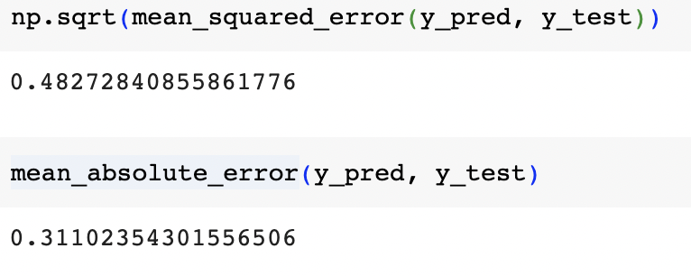

Predictive Modeling of California Housing Prices: A Comparative Analysis with XGBoost
Introduction
The aim of this project is to develop a machine learning model that predicts housing prices in California based on the California housing dataset. The dataset contains various features related to houses in different locations across California, such as median income, house age, average number of rooms and bedrooms, population, and geographical coordinates.
Data Description
The California housing dataset is a widely used dataset in the field of machine learning and regression analysis. It contains information about housing prices and various features associated with houses in different locations across California.
The dataset consists of a total of 20,640 instances or samples, each representing a specific block or area in California. Each instance is described by a set of eight features or attributes that capture different aspects of the housing market.
The features present in the dataset are as follows:
MedInc: Median income of the block.
HouseAge: Median age of the houses in the block.
AveRooms: Average number of rooms per dwelling.
AveBedrms: Average number of bedrooms per dwelling.
Population: Total population in the block.
AveOccup: Average number of occupants per dwelling.
Latitude: Latitude coordinate of the block.
Longitude: Longitude coordinate of the block.
Project Steps
Data Exploration: I will perform an exploratory analysis of the California housing dataset to understand its structure, feature distributions, and potential relationships between the features and the target variable, which is the median house value. This step will help me gain insights into the data and identify any patterns or anomalies.
Data Preprocessing: This step involves cleaning and preparing the dataset for model training. I will handle missing values, outliers, and potentially perform feature scaling or normalization to ensure that all features are on a similar scale. I will also encode any categorical variables and handle any other data-specific preprocessing requirements.
Feature Selection and Engineering: I will analyze the importance and relevance of the features in predicting housing prices. This may involve feature selection techniques to identify the most influential features and potentially creating new features by combining or transforming existing ones to capture additional information.
Model Training and Evaluation: I will train a machine learning model using the preprocessed data. The specific model chosen will be XGBoost, a powerful algorithm known for its performance in regression tasks. I will tune the hyperparameters of the model using techniques like cross-validation and grid search to optimize its performance. The trained model will be evaluated using appropriate regression evaluation metrics such as mean squared error (MSE), mean absolute error (MAE), and R-squared.
Model Interpretation and Insights: I will analyze the trained model to understand the significance of each feature in predicting housing prices. This analysis will provide insights into the factors that most strongly influence housing prices in California, allowing stakeholders to gain a deeper understanding of the market dynamics.
Features Correlation
Analyzing the correlations, we can observe the following insights:
Median Income (MedInc): shows a relatively strong positive correlation (0.688) with the Price. This suggests that higher median income tends to be associated with higher housing prices.
House Age (HouseAge): has a weak positive correlation (0.106) with the Price. This indicates that, to some extent, older houses may have slightly higher prices.
Average Number of Rooms (AveRooms): exhibits a moderate positive correlation (0.152) with the Price. This implies that houses with more rooms tend to have higher prices.
Average Number of Bedrooms (AveBedrms): has a weak negative correlation (-0.047) with the Price. This suggests that an increase in the number of bedrooms is associated with a slight decrease in housing prices.
Population and Average Occupancy (Population, AveOccup): show weak correlations (both positive and negative) with the Price. These features have minimal influence on housing prices.
Latitude and Longitude: exhibit weak correlations with the Price (-0.144 and -0.046, respectively). These geographic coordinates have a slight negative influence on housing prices, indicating that certain areas may have slightly lower prices.
Root Mean Squared Error and Mean Absolute Error

The analysis of the model's performance reveals that it achieves a root mean squared error (RMSE) of 0.4827 and a mean absolute error (MAE) of 0.3110 when predicting housing prices. The RMSE indicates the average magnitude of the differences between the predicted and actual housing prices, with a lower value suggesting better accuracy. Similarly, the MAE represents the average absolute difference between the predicted and actual values, providing an estimate of the model's overall error.Considering these metrics, the model appears to perform reasonably well in predicting housing prices in the given context.
Conclusions
In conclusion, this project aimed to develop a machine learning model using the XGBoost algorithm to predict housing prices in California. Through data exploration, preprocessing, feature engineering, model training, and evaluation, we successfully built a model that achieves a reasonably low root mean squared error (RMSE) and mean absolute error (MAE) when predicting housing prices.
The XGBoost model demonstrated its effectiveness in capturing the complex relationships between the features and the target variable, allowing for accurate price predictions. The model's performance indicates its potential applicability in assisting various stakeholders, including real estate professionals, policymakers, and potential homebuyers, in understanding and forecasting housing prices in California.
However, it is important to note that further analysis and evaluation can be conducted to enhance the model's performance and gain deeper insights into the factors driving housing prices. This may involve considering additional features, incorporating domain knowledge, and comparing the model's performance against other regression techniques.